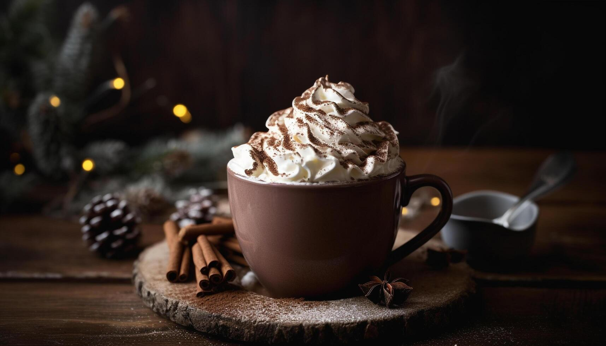
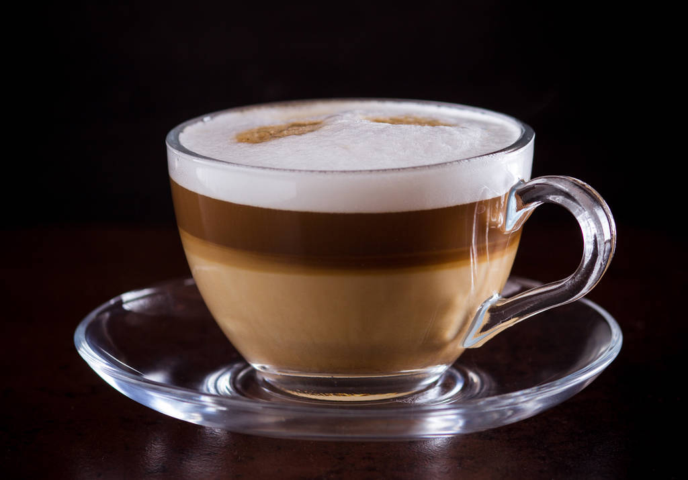
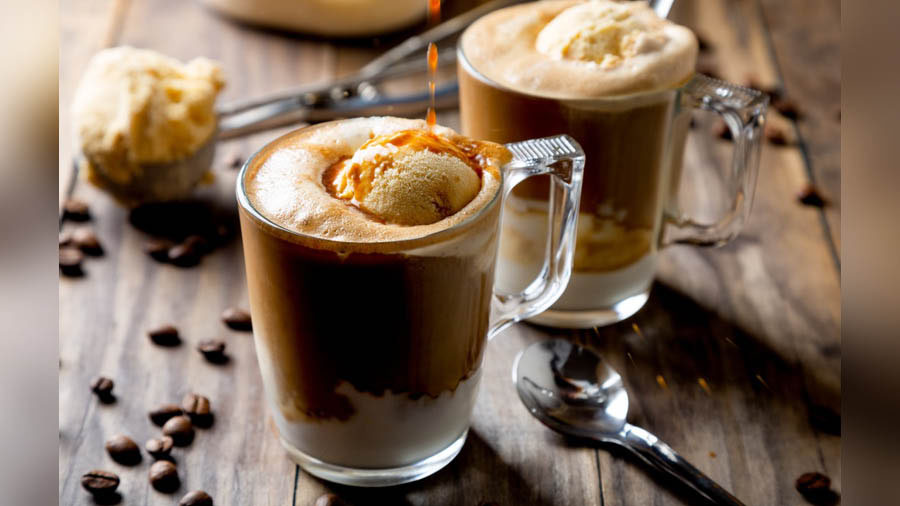

Coffee
Coffee, a beloved beverage enjoyed by millions around the globe, is derived from the roasted seeds of the Coffea plant, known as coffee beans. These beans are the core of a complex and rich industry that spans continents, cultures, and centuries. Coffee's origins trace back to the ancient coffee forests of Ethiopia, where legend suggests that goat herders first noticed the energizing effects of coffee beans. From these humble beginnings, coffee cultivation and trade spread to the Arabian Peninsula, where it became deeply embedded in the culture and daily life.There are two main species of coffee plants cultivated for consumption: Coffea arabica and Coffea canephora, commonly known as Arabica and Robusta, respectively. Arabica beans, which account for about 60-70% of the world's coffee production, are prized for their sweet, soft taste and intricate flavor profiles that can include notes of fruit, sugar, and berries. The journey from coffee bean to cup involves several intricate steps, each contributing to the final flavor and quality of the beverage. Once harvested, coffee beans undergo processing to remove the outer fruit layers.
Coffee, a beloved beverage enjoyed by millions around the globe, is derived from the roasted seeds of the Coffea plant, known as coffee beans. These beans are the core of a complex and rich industry that spans continents, cultures, and centuries.
Types Of Coffee
Espresso is a concentrated coffee beverage that originates from Italy. It is made by forcing a small amount of nearly boiling water under high pressure through finely-ground coffee beans. The result is a small, potent shot of coffee that forms the base for many other coffee drinks. Espresso is characterized by its rich, robust flavor and a layer of crema, a creamy, golden foam that sits on top of the liquid. This crema is a hallmark of a well-made espresso, signifying the quality of the coffee and the skill of the barista. Unlike drip coffee, espresso is meant to be enjoyed quickly, often consumed in a few sips. Despite its small size, a single shot of espresso contains about as much caffeine as a regular cup of coffee, making it a powerful and invigorating choice. The versatility of espresso lies in its ability to be enjoyed on its own or as a base for a variety of other beverages, including lattes, cappuccinos, and Americanos.

Cappuccino is a traditional Italian coffee drink that is rich and flavorful, known for its balanced combination of espresso, steamed milk, and milk foam. Typically, a cappuccino is made with equal parts of these three ingredients, resulting in a strong coffee flavor complemented by a creamy texture and a frothy top. The key to a perfect cappuccino lies in the texture and temperature of the milk, which should be steamed to create a dense, velvety foam. This foam not only enhances the drink's texture but also acts as an insulating layer, keeping the coffee warm. Cappuccinos are often enjoyed in the morning in Italy, paired with a pastry like a croissant. Outside of Italy, they are popular throughout the day. The drink can be customized with a sprinkle of cocoa powder or cinnamon on top, adding an extra layer of flavor. Cappuccinos offer a more intense coffee experience than lattes due to the higher proportion of espresso
Mocha also known as a caffè mocha, is a delightful fusion of coffee and chocolate, combining the rich flavors of espresso, steamed milk, and chocolate syrup or cocoa powder. Originating from Italy, the mocha is inspired by the flavors of the Yemeni city of Mocha, which was historically a significant coffee trade center. A typical mocha consists of one or two shots of espresso, mixed with hot chocolate or chocolate syrup, and topped with steamed milk and often a dollop of whipped cream. The result is a sweet, indulgent beverage that appeals to coffee and chocolate lovers alike. The chocolate adds a creamy sweetness that balances the bitterness of the espresso, creating a harmonious blend of flavors. Some variations include adding flavored syrups, such as vanilla or peppermint, to enhance the drink further.
Irish coffee is a delightful cocktail that combines hot coffee, Irish whiskey, sugar, and a layer of cream. Originating in Ireland in the 1940s, this drink is designed to be both invigorating and warming, making it a popular choice in colder climates. To prepare an Irish coffee, a strong brewed coffee is mixed with a shot of Irish whiskey and a teaspoon of brown sugar, which helps balance the bitterness of the coffee and the bite of the whiskey. The mixture is then topped with lightly whipped cream, creating a contrasting layer of cold, creamy richness. The key to a perfect Irish coffee is to avoid stirring the cream into the drink, allowing it to float on top, so each sip passes through the cream before reaching the coffee and whiskey blend. This layering effect provides a unique taste experience, blending the warmth and strength of the coffee and whiskey with the smooth, cooling sensation of the cream.
Macchiato meaning "stained" or "spotted" in Italian, is a coffee drink that traditionally consists of a shot of espresso "stained" with a small amount of steamed milk or milk foam. This drink is designed to provide the bold, intense flavor of espresso with a slight mellowing effect from the milk, making it stronger than a latte but milder than a straight espresso. There are two main variations of the macchiato: the espresso macchiato and the latte macchiato. The espresso macchiato features a dollop of milk foam on top of the espresso, while the latte macchiato involves pouring the espresso into steamed milk, creating a layered effect. The macchiato's versatility allows for numerous adaptations, including flavored versions like caramel or vanilla macchiatos, popularized by coffee chains. This drink is ideal for those who enjoy the robust taste of espresso but prefer a touch of creaminess to balance the intensity
Cold brew is a refreshing and smooth coffee beverage made by steeping coarsely ground coffee beans in cold water for an extended period, usually 12 to 24 hours. Unlike traditional hot coffee, cold brew is never exposed to heat, which results in a lower acidity and a naturally sweeter flavor profile. After steeping, the coffee grounds are filtered out, leaving behind a concentrated coffee that can be diluted with water or milk to taste. This process yields a coffee that is less bitter and has a rich, robust flavor, making it a popular choice for those who prefer a milder, smoother coffee experience. Cold brew is typically served over ice and can be customized with various additions, such as flavored syrups, cream, or a splash of tonic water for a unique twist. Its convenience and long shelf life.
Affogato is a delightful Italian dessert that elegantly combines the worlds of coffee and ice cream. The term "affogato" translates to "drowned" in Italian, which perfectly describes this treat: a scoop of vanilla gelato or ice cream is "drowned" in a shot of hot espresso. The contrast between the hot, bitter espresso and the cold, sweet ice cream creates a harmonious balance of flavors and temperatures, making it a popular choice for those looking for a simple yet indulgent dessert. To prepare an affogato, a single or double shot of freshly brewed espresso is poured over a generous scoop of vanilla gelato or ice cream. Some variations may include a splash of liqueur, such as amaretto or Frangelico, for an added layer of complexity. The espresso melts the ice cream slightly, resulting in a creamy, coffee-infused dessert that can be enjoyed with a spoon or sipped directly from the cup.
Major Brands
Starbucks, the global coffeehouse chain, is known for its extensive range of coffee beverages and high-quality coffee beans. Founded in 1971 in Seattle, it has become a household name, offering everything from espressos to lattes and frappuccinos. Starbucks also focuses on sustainable sourcing and ethical practices, ensuring that their coffee supports the well-being of farmers
Dunkin', formerly known as Dunkin' Donuts, is an American coffee and doughnut company founded in 1950. Known for its affordability and convenience, Dunkin' offers a wide range of coffee drinks, from classic drip coffee to flavored lattes and iced coffees. Its consistent quality and extensive network of outlets make it a favorite for many coffee drinkers on the go.
Nescafé, a brand of instant coffee made by Nestlé, has been a global favorite since its introduction in 1938. Known for its convenience and consistent quality, Nescafé offers a wide range of products, including classic instant coffee, premium blends, and specialty beverages like cappuccinos and lattes.
Lavazza, an Italian coffee brand founded in 1895, is a staple in many households and cafes around the world. Known for its rich tradition and expertise in blending, Lavazza offers a diverse range of products, from espresso to drip coffee. The brand is celebrated for its aromatic blends that capture the essence of Italian coffee culture.
Caribou Coffee, founded in 1992 in Minnesota, is known for its cozy, cabin-themed coffeehouses and high-quality coffee. The brand focuses on sustainability and ethical sourcing, offering a variety of blends and single-origin coffees. Caribou Coffee is particularly popular in the Midwest and is known for its flavorful roasts and welcoming atmosphere.
Peet's Coffee, established in 1966 in Berkeley, California, is renowned for its strong, rich, and freshly roasted beans. The brand emphasizes artisanal roasting techniques and a commitment to quality. Peet's Coffee is a favorite among those who prefer a robust flavor, and it has a loyal following for its dark roasts and specialty blends.
Gallery